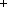

Copyright ©1995 by NeXT Computer, Inc. All Rights Reserved.
| NXPrinter |
| Inherits From: | Object | |
| Declared In: | appkit/NXPrinter.h |
| Class Description |
| An NXPrinter describes the printing capabilities of a particular make or type of printer, such as whether the printer can print in color, or whether it provides a particular font. In addition, some NXPrinters represent actual printer devices that are available to the computer for printing.
There are two ways to create an NXPrinter: |
| If you want an abstract object that doesn't represent an actual printer but gives the printing attributes of a type of printer, you use the newForType: class method, passing a printer type (a string) as the argument. A list of printer types that are recognized by the computer is available through the printerTypes:custom: class method. | ||
| To find or create an NXPrinter that corresponds to an actual printer device, you use one of the newForName: class methods, passing, at least, the name of a printer. A list of printer names can be retrieved through the prdb_get() function. |
| Once you've gotten an NXPrinter, there's only one thing you can do with it: Retrieve information regarding the object's type or regarding the actual printer that the object represents (if it represents an actual printer). You can't change the information in an NXPrinter, nor can you use an NXPrinter object to initiate or control a printing job. In addition, NXPrinter instances are owned by the NXPrinter class; you never free them directly.
Printer types are described in files written in the PostScript Printer Description (PPD) format. The printer types that NeXT provides are in localized subdirectories of /NextLibrary/PrinterTypes. When you create an NXPrinter object for a particular type, the object reads the corresponding PPD file, manipulates the information it finds there, and stores the data in named tables. Commonly needed items, such as whether a printer is color or the size of the page on which it prints, are available directly through methods defined by NXPrinter (methods such as isColor and pageSizeForPaper:). Any bit of information in the PPD tables can be retrieved through more general methods such as stringForKey: inTable:, as explained below. Note: To understand what the NXPrinter tables contain, you need to be acquainted with the PPD file format. This is described in PostScript Printer Description File Format Specification, version 4.0, available from Adobe Systems Incorporated. The rest of this class description assumes a familiarity with the concepts and terminology presented in the Adobe manual. A brief summary of the PPD format is given below; PPD terms defined in the Adobe manual are shown in italic.
PPD Format A PPD file statement, or entry, associates a value with a main keyword:
The asterisk is literal; it indicates the beginning of a new entry. For example: |
 *ModelName: "MMimeo Machine"
*ModelName: "MMimeo Machine"
 *3dDevice: False
*3dDevice: False
| A main keyword can be qualified by an option keyword:
For example: |
 *PaperDensity Letter: "0.1"
*PaperDensity Letter: "0.1"
 *PaperDensity Legal: "0.2"
*PaperDensity Legal: "0.2"
 *PaperDensity A4: "0.3"
*PaperDensity A4: "0.3"
 *PaperDensity B5: "0.4"
*PaperDensity B5: "0.4"
| In addition, any number of entries may have the same main keyword with no option keyword yet give different values: |
 *InkName: ProcessBlack/Process Black
*InkName: ProcessBlack/Process Black
 *InkName: CustomColor/Custom Color
*InkName: CustomColor/Custom Color
 *InkName: ProcessCyan/Process Cyan
*InkName: ProcessCyan/Process Cyan
 *InkName: ProcessMagenta/Process Magenta
*InkName: ProcessMagenta/Process Magenta
 *InkName: ProcessYellow/Process Yellow
*InkName: ProcessYellow/Process Yellow
| Option keywords and values can sport translation strings. A translation string is a textual description, appropriate for display in a user interface, of the option or value. An option or value is separated from its translation string by a slash: |
 *Resolution 300dpi/300 dpi: " ... "
*Resolution 300dpi/300 dpi: " ... "
 *InkName: ProcessBlack/Process Black
*InkName: ProcessBlack/Process Black
| In the first example, the 300dpi option would be presented in a user interface as "300 dpi." The second example assigns the string "Process Black" as the translation string for the ProcessBlack value.
Entries that have an *OrderDependency or *UIConstraints main keyword are treated specially by NXPrinter. Such entries take the following forms (the bracketed elements are optional):
There may be more than one UIConstraints entry with the same mainKeyword1 or mainKeyword1/optionKeyword1 value. Below are some examples of *OrderDependency and *UIConstraints entries: |
 *OrderDependency: 10 AnySetup *Resolution
*OrderDependency: 10 AnySetup *Resolution
 *UIConstraint: *Option3 None *PageSize Legal
*UIConstraint: *Option3 None *PageSize Legal
 *UIConstraint: *Option3 None *PageRegion Legal
*UIConstraint: *Option3 None *PageRegion Legal
| Explaining these entries is beyond the scope of this documentation; however, it's important to note their forms in order to understand how they're represented in the NXPrinter tables.
NXPrinter Tables NXPrinter defines a five key-value tables to store PPD information. The tables are identified by string names, as given below: |
| String Name | Contents | |
| PPD | General information about a printer type. The table contains the values for all entries in a PPD file except those with *OrderDependency and *UIConstraints main keywords. The values in this table don't include the translation strings. | |
| PPDOptionTranslation | Option keyword translation strings. | |
| PPDArgumentTranslation | Value translation strings. | |
| PPDOrderDependency | *OrderDependency values. | |
| PPDUIConstraint | *UIConstraints values. |
| There are two principle methods for retrieving data from the NXPrinter tables: |
| stringForKey:inTable: returns the value for the first occurence of a given key in the given table. | ||
| stringListForKey:inTable: returns an array of values, one for each occurence of the key. |
| For both methods, the first argument is a string that names a key--which part of a PPD file entry the key corresponds to depends on the table (as explained in the following sections). The second argument names the table that you want to look in. The values that are returned by these methods, whether singular or in an array, are always strings, even if the value wasn't a quoted string in the PPD file.
The NXPrinter tables store data as ASCII text, thus the two methods described above are sufficient for retrieving any value from any table. NXPrinter provides a number of other methods, such as booleanForKey:inTable: and intForKey:inTable:, that retrieve single values and coerce them, if possible, into particular data types. The coercion doesn't affect the data that's stored in the table (it remains in ASCII format). To check the integrity of a table, use the isKey:forTable: and statusForTable: methods. The former returns a boolean that indicates whether the given key is valid for the given table; the latter returns an error code that describes the general state of a table (in particular, whether it actually exists).
Retrieving Values from the PPD Table Keys for the PPD table are strings that name a main keyword or main keyword/option keyword pairing (formatted as "mainKeyword/optionKeyword"). In both cases, you exclude the main keyword asterisk. The following example creates an NXPrinter and invokes stringForKey:inTable: to retrieve the value for an un-optioned main keyword: |
 /* Create an NXPrinter object for a printer type. */
/* Create an NXPrinter object for a printer type. */
 NXPrinter *prType = [NXPrinter
NXPrinter *prType = [NXPrinter
 newForType:"My_Mimeo_Machine"]
newForType:"My_Mimeo_Machine"]
 char *sValue = [prType stringForKey:"3dDevice" inTable:"PPD"];
char *sValue = [prType stringForKey:"3dDevice" inTable:"PPD"];
 /* sValue is "False". */
/* sValue is "False". */
| To retrieve the value for a main/option pair, you pass the keywords formatted as "mainKeyword/optionKeyword": |
 char *sValue = [prType stringForKey:"PaperDensity/A4"
char *sValue = [prType stringForKey:"PaperDensity/A4"
 inTable:"PPD"];
inTable:"PPD"];
 /* sValue is "0.3". */
/* sValue is "0.3". */
| You can use stringForKey:inTable: to determine if a main keyword has options. If you pass a main keyword (only) as the first argument to the method, and if that keyword has options in the PPD file, the method returns NULL. If it doesn't have options, it returns the value of the first occurence of the main keyword: |
 char *sValue = [prType stringForKey:"PaperDensity" inTable:"PPD"];
char *sValue = [prType stringForKey:"PaperDensity" inTable:"PPD"];
 /* sList is NULL */
/* sList is NULL */
 char *sValue = [prType stringForKey:"InkName" inTable:"PPD"];
char *sValue = [prType stringForKey:"InkName" inTable:"PPD"];
 /* sList is "ProcessBlack" */
/* sList is "ProcessBlack" */
| To retrieve the values for all occurrences of an un-optioned main keyword, use the stringListForKey:inTable: method: |
 char **sList = [prType stringListForKey:"InkName" inTable:"PPD"];
char **sList = [prType stringListForKey:"InkName" inTable:"PPD"];
 /* sList[0] is "ProcessBlack",
/* sList[0] is "ProcessBlack",
 sList[1] is "CustomColor",
sList[1] is "CustomColor",
 sList[2] is "ProcessCyan", and so on. */
sList[2] is "ProcessCyan", and so on. */
| In addition, stringListForKey:inTable: can be used to retrieve all the options for a main keyword (given that the main keyword has options): |
 char **sList = [prType stringListForKey:"PaperDensity"
char **sList = [prType stringListForKey:"PaperDensity"
 inTable:"PPD"];
inTable:"PPD"];
 /* sList[0] is "Letter",
/* sList[0] is "Letter",
 sList[1] is "Legal",
sList[1] is "Legal",
 sList[2] is "A4", and so on. */
sList[2] is "A4", and so on. */
| Retrieving Values from the Option and Argument Translation Tables
A key to a translation table is like that to the PPD table: It's a main keyword or main/option keyword pair (again excluding the asterisk). However, the values that are returned from the translation tables are the translation strings for the option or argument (value) portions of the PPD file entry. For example: |
 char *sValue = [prType stringForKey:"Resolution/300dpi"
char *sValue = [prType stringForKey:"Resolution/300dpi"
 inTable:"PPDOptionTranslation"];
inTable:"PPDOptionTranslation"];
 /* sValue is "300 dpi". */
/* sValue is "300 dpi". */
 char **sList = [prType stringListForKey:"InkName"
char **sList = [prType stringListForKey:"InkName"
 inTable:"PPDArgumentTranslation"];
inTable:"PPDArgumentTranslation"];
 /* sList[0] is "Process Black",
/* sList[0] is "Process Black",
 sList[1] is "Custom Color",
sList[1] is "Custom Color",
 sList[2] is "Process Cyan", and so on. */
sList[2] is "Process Cyan", and so on. */
| As with the PPD table, requesting an array of strings for an un-optioned main keyword returns the keyword's options (if it has any).
Retrieving Values from the Order Dependency Table As mentioned earlier, an order dependency entry takes this form:
These entries are stored in the PPDOrderDependency table. To retrieve a value from this table, you always use stringListForKey:inTable:. The value that you pass as the key is, again, a main keyword or main/option pair; however, these values correspond to the mainKeyword and optionKeyword parts of an order dependency entry's value. As with the other tables, the main keyword's asterisk is excluded. The method returns an array of two strings that correspond to the real and section values for the entry. For example: |
 char **sList = [prType stringListForKey:"Resolution"
char **sList = [prType stringListForKey:"Resolution"
 inTable:"PPDOrderDependency"]
inTable:"PPDOrderDependency"]
 /* sList[0] = "10", sList[1] = "AnySetup" */
/* sList[0] = "10", sList[1] = "AnySetup" */
| Retrieving Values from the UIConstraints Table
Retrieving a value from the PPDUIConstraints table is similar to retrieving a value from the PPDOrderDependency table: You always use stringListForKey:inTable: and the key corresponds to elements in the entry's value. Given the following form (as described earlier), the key corresponds to mainKeyword1/optionKeyword1:
The array that's returned by stringListForKey:inTable: contains the mainKeyword2 and optionKeyword2 values (with the keywords stored as separate elements in the array) for every *UIConstraints entry that has the given mainKeyword1/optionKeyword1 value. For example: |
 char **sList = [prType stringListForKey:"Option3/None"
char **sList = [prType stringListForKey:"Option3/None"
 inTable:"PPDUIConstraints"]
inTable:"PPDUIConstraints"]
 /* sList[0] = "PageSize", sList[1] = "Legal",
/* sList[0] = "PageSize", sList[1] = "Legal",
 sList[2] = "PageRegion", sList[3] = "Legal" */
sList[2] = "PageRegion", sList[3] = "Legal" */
| Note that the main keywords that are returned in the array don't have asterisks. Also, the array that's returned always alternates main and option keywords. If a particular main keyword doesn't have an option associated with it, the string for the option will be empty (but the entry in the array for the option will exist). |
| Instance Variables |
| const char *printerName;
const char *hostName; const char *domainName; const char *printerType; |
| printerName | The printer's name. | |
| hostName | The name of the printer's host computer. | |
| domainName | The name of the printer's domain. | |
| printerType | The name of the printer's type. |
| Method Types |
| Finding an NXPrinter |  newForName: |
| newForName:host: newForName:host:domain:includeUnavailable: newForType: + printerTypes:custom: |
| Printer attributes |
| Retrieving specific information |
| Querying the NXPrinter tables |
| Class Methods |
| newForName: |
| + (NXPrinter *)newForName:(const char *)name |
| Returns the NXPrinter with the given name; returns the value returned by |
 [self newForName:name host:NULL domain:NULL includeUnavailable:NO]
[self newForName:name host:NULL domain:NULL includeUnavailable:NO]
| See also: + newForName:host:domain:includeUnavailable:, + newForType: |
| newForName:host: |
| + (NXPrinter *)newForName:(const char *)name host:(const char *)hostName |
| Returns the NXPrinter with the given name and host; returns the value returned by |
 [self newForName:name host:hostName domain:NULL includeUnavailable:NO]
[self newForName:name host:hostName domain:NULL includeUnavailable:NO]
| See also: + newForName:host:domain:includeUnavailable:, + newForType: |
| newForName:host:domain:includeUnavailable: |
| + (NXPrinter *)newForName:(const char *)name |
| host:(const char *)hostName domain:(const char *)domain includeUnavailable:(BOOL)includeFlag |
| Returns an NXPrinter that represents an actual printer with the given name, host, and domain. If hostName or domainName is NULL, the first printer (with the given name) found on any host or domain is used. If hostName is an empty string, the local host is used. If includeFlag is NO, then the matching printer must be available for printing, otherwise nil is returned. If the flag is YES, the availability of the printer is ignored.
See also: + newForType: |
| newForType: |
| + (NXPrinter *)newForType:(const char *)type |
| Returns an NXPrinter object that contains information for the given type; the object doesn't correspond to an actual printer. The type argument should be an element in the array returned by printerTypes:custom:.
See also: + newForName:host:domain:includeUnavailable:, + printerTypes:custom: |
| printerTypes:custom: |
| (char **)printerTypes:(BOOL)normalFlag custom:(BOOL)customFlag |
| Returns a pointer to an array of strings that give the names of the printer types that are recognized by the computer. The flag arguments indicate whether to include normal printer types, custom types, or both.
A printer type is represented by a PPD file (extension ".ppd"). This method searches for normal PPD files directly, or in bundles, in the following directories: |
| /NextLibrary/PrinterTypes ~/Library/PrinterTypes /HostLibrary/PrinterTypes /LocalLibrary/PrinterTypes |
| Custom PPD files are searched for in the "CustomPrinters" subdirectory (or bundles therein) in each of the above.
See also: + newForType |
| Instance Methods |
| acceptsBinary |
| Returns YES if the NXPrinter accepts binary PostScript data. Otherwise returns NO. |
| booleanForKey:inTable: |
| Returns a boolean value for the given key in the given table: YES is returned if the value, which is stored as ASCII text, is "YES", "TRUE", or names a non-negative integer. Otherwise, this returns NO. key should be formed as described in the class description, above.
See also: |
| dataForKey:inTable:length: |
| inTable:(const char *)table length:(int *)bytes |
| Returns a pointer to untyped data for the given key in the given table. The length of the data, in bytes, is returned by reference in bytes. key should be formed as described in the class description, above.
See also: |
| domain |
| Returns the name of the domain in which the NXPrinter's printer entry resides. If the object doesn't represent an actual printer, this returns a pointer to NULL.
See also: + newForName:host:domain:includeUnavailable: |
| floatForKey:inTable: |
| Returns a floating-point value for the given key in the given table; returns 0.0 if the value, which is stored as ASCII text, can't be coerced to float. key should be formed as described in the class description, above.
See also: |
| free |
| Never invoke this method. NXPrinter objects are owned by the NXPrinter class--you never free them yourself. |
| host |
| Returns the name of the host to which the printer is connected. If the object doesn't represent an actual printer, this returns a pointer to NULL.
See also: + newForName:host:, + newForName:host:domain:includeUnavailable: |
| imageRectForPaper: |
| Returns the printing rectangle--the area of the page that's available for printing--for the named paper type. The selection of paper type names depends on the NXPrinter's type; typical names include "Legal", "Letter", "A4", and "B5".
See also: |
| init |
| You never invoke this method. To create an NXPrinter, use one of the newFor... class methods. |
| intForKey:inTable: |
| Returns an integer value for the given key in the given table; returns 0 if the value, which is stored as ASCII text, can't be coerced to int. key should be formed as described in the class description, above.
See also: |
| isColor |
| Returns YES if the NXPrinter can print in color. Otherwise returns NO. |
| isFontAvailable: |
| Returns YES if the named font is available to the NXPrinter; otherwise returns NO. Font names are formed as in an invocation of Font's useFont: method; examples include "Helvetica-Bold", "Times-Roman", and "Courier-BoldOblique". |
| isKey:inTable: |
| Returns YES if key is a key to table (which must name one of the NXPrinter tables listed in the class description, above).
See also: |
| isOutputStackInReverseOrder |
| Returns YES if the printer outputs pages in reverse page order, otherwise returns NO. By being printed in reverse order, the pages in the resulting output stack will be in the correct (first-to-last) order (assuming that the printer produces pages face-up). |
| isReallyAPrinter |
| Returns YES if the NXPrinter corresponds to an actual printer device. Otherwise returns NO. |
| isValid |
| Returns YES if the NXPrinter is valid--if its internal state matches physical reality. Otherwise returns NO. This is important only for NXPrinters that correspond to actual printers.
See also: |
| languageLevel |
| Returns 1 or 2 as the NXPrinter recognizes the PostScript Language Level I or Level II. |
| name |
| Returns the name of the NXPrinter. If the object doesn't represent an actual printer, this returns a pointer to NULL.
See also: + newForName:, + newForName:host:domain:includeUnavailable: |
| note |
| Returns the comment that's associated with the NXPrinter. If the object doesn't represent an actual printer, this returns a pointer to NULL. The text for the note is set through the PrintManager application. |
| pageSizeForPaper: |
| Returns the size of the page for the named paper type. The selection of paper type names depends on the NXPrinter's type; typical names include "Legal", "Letter", "A4", and "B5".
See also: |
| rectForKey:inTable: |
| Returns an NXRect for the given key in the given table. The individual fields are set to 0.0 if the value, which is stored as ASCII text, can't be fit into an NXRect structure. key should be formed as described in the class description, above.
See also: |
| sizeForKey:inTable: |
| Returns an NXSize for the given key in the given table. The individual fields are set to 0.0 if the value, which is stored as ASCII text, can't be fit into an NXSize structure. key should be formed as described in the class description, above.
See also: |
| statusForTable: |
| Returns one of the following constants to indicate the status of the given table: |
| Constant | Meaning | |
| NX_PRINTERTABLEOK | The table is valid. | |
| NX_PRINTERTABLENOTFOUND | The table doesn't exist in this NXPrinter. | |
| NX_PRINTERTABLEERROR | The table exists but is invalid. |
| See also: |
| stringForKey:inTable: |
| Returns a pointer to the ASCII text that corresponds to key in the given table. If the table contains more than one entry with this key, the value of the first entry is returned. A pointer to NULL is returned if the table doesn't contain a key that precisely matches key. See the class description, above, for more information on this method.
See also: |
| stringListForKey:inTable: |
| Returns a pointer to an array of strings; each string gives the ASCII text that corresponds to an entry that has the given key in the given table. If key names a main keyword for which there are (in the table) option keywords, the returned array contains the option keywords. See the class description, above, for more information on this method.
Note that it's the invoker's responsibility to free the array that's returned by this method, but not the contents of the array. See also: |
| type |
| Returns a string that names the NXPrinter's type.
See also: |